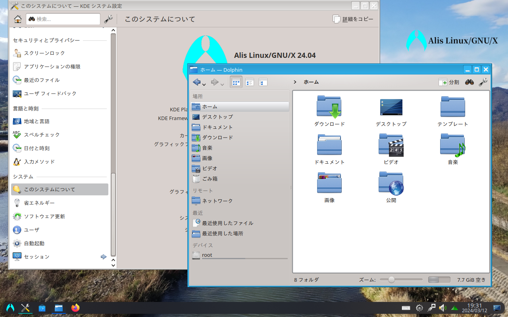

There are three ways to install Alis. Which do you prefer?
| Download ISO | Buy paid version | Migrate from existing environment |
When you use Alis, you require the agreement of the End User License Agreement (EULA).
.........Did you thorough read it?
Burn this disc image to a DVD or USB flash drive as installation media.
As soon as you boot from the installation media, the "Calamares" installer starts up. You cannot try it out in a live boot environment.
This image should only be used for new installations. Existing installations can be updated from the Software Centre or with the command "nako -Syu".
Everything is libre to download, use and share, but there is no support instead. Please use it at your own risk.
If you need installation support, consider purchasing the paid version.
※Files downloaded from sources other than NMI's SourceForge project are not guaranteed to be the same as genuine products. For your safety, please make sure to download from the official source.
Please make sure to burn it in the DD mode. "Rufus" is recommended for MS-Windows.
Download ISO from following links.
LXQtA desktop environment that seems to embody "Simple and Robust". It is light, but it has all the functions of a desktop. Standard Machine SpecsCPU x86_64, 1 GHz or higher |
 |
 |
LXQt AmberFor devices with older (around gen 2-8) Intel graphics. No matter how new it is, there's no turning a blind eye to history. Standard Machine SpecsCPU x86_64, 1 GHz or higher |
GNOMEDoes not resemble either Win or Mac operatibility. May be lighter than it looks. Standard Machine SpecsCPU x86_64, 1 GHz or higher |
 |
|  |
PlasmaMaybe the most modern desktop flavour. There are also screen effects such as the taskbar floating and windows jiggling like jelly. Standard Machine SpecsCPU x86_64, 1 GHz or higher |
XfceDespite its gorgeous appearance, it is lightweight. Appearance looks like you can be smug at a cafe, but maybe it doesn't mean much. Standard Machine SpecsCPU x86_64, 1 GHz or higher |
 |
There are two types of paid versions planned: Both prices are 2,200 yens (tax in).
Both editions come with 30 days of installation support from the time of user registration via e-mail.
They will be sold at various dojinshi sales events and NMI's official online shop.
Please follow the steps below to perform the migration.
sudo pacman -Syu
wget https://alislinux.github.io/migrate2alis.sh
sudo bash migrate2alis.sh